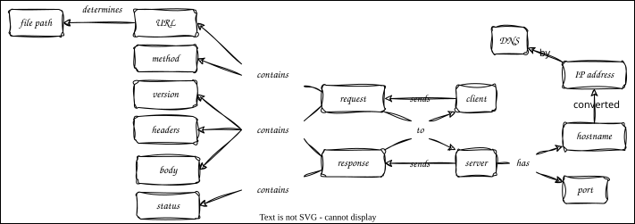

HTTP
Overview

Outline
- Typical web application has clients and servers
- Communicate using Internet Protocol (IP), and specifically Transmission Control Protocol (TCP/IP)
- Makes communication between computers look like reading and writing files
- A socket is one end of a point-to-point channel
- Consists of an IP address (identifies machine) and a port on that machine
- IP address is four 8-bit numbers(e.g.,
93.184.216.34) - Domain Name System (DNS) matches these to symbolic names like
example.com - Port is a number in the range 0-65535
- Only one process can use a port at a time
Using Sockets
socketservermodule provides:TCPServerclass to manage incoming connectionsBaseRequestHandlerclass that does everything except process the incoming data
TCPServercreates a new handler each time it gets a connection and calls that object'shandlemethodsimple_server.pyreads up to 1024 bytes of data and returns a message
"""Basic socket server."""
import socketserver
CHUNK_SIZE = 1024
SERVER_ADDRESS = ("localhost", 5000)
class MyHandler(socketserver.BaseRequestHandler):
def handle(self):
data = self.request.recv(CHUNK_SIZE)
cli = self.client_address[0]
msg = f"server received {len(data)} bytes from {cli}"
print(msg)
print(data)
self.request.sendall(bytes(msg, "utf-8"))
if __name__ == "__main__":
server = socketserver.TCPServer(SERVER_ADDRESS, MyHandler)
server.serve_forever()
- Use netcat to open a connection and send some text with
send_with_nc.sh
echo "testing" | nc 127.0.0.1 5000
HTTP Request and Response
- HyperText Transfer Protocol (HTTP) is deliberately simple
- Minimal request is just
GET /index.html HTTP/1.1- Method
- Path
- Protocol version
http_request_headers.txtshows more realistic request
GET /index.html HTTP/1.1
Accept: text/html
Accept-Language: en, fr
If-Modified-Since: 16-May-2024
http_response.txtshows possible response
HTTP/1.1 200 OK
Date: Thu, 16 June 2023 12:28:53 GMT
Content-Type: text/html
Content-Length: 53
<html>
<body>
<h1>Hello, World!</h1>
</body>
</html>
http_server.pyresponds toGETwith same page every time.
from http.server import BaseHTTPRequestHandler, HTTPServer
PAGE = """<html><body><p>path: {path}</p></body></html>"""
class RequestHandler(BaseHTTPRequestHandler):
def do_GET(self):
page = PAGE.format(path=self.path)
content = bytes(page, "utf-8")
self.send_response(200)
self.send_header("Content-Type", "text/html; charset=utf-8")
self.send_header("Content-Length", str(len(content)))
self.end_headers()
self.wfile.write(content)
if __name__ == "__main__":
server_address = ("localhost", 5000)
server = HTTPServer(server_address, RequestHandler)
server.serve_forever()